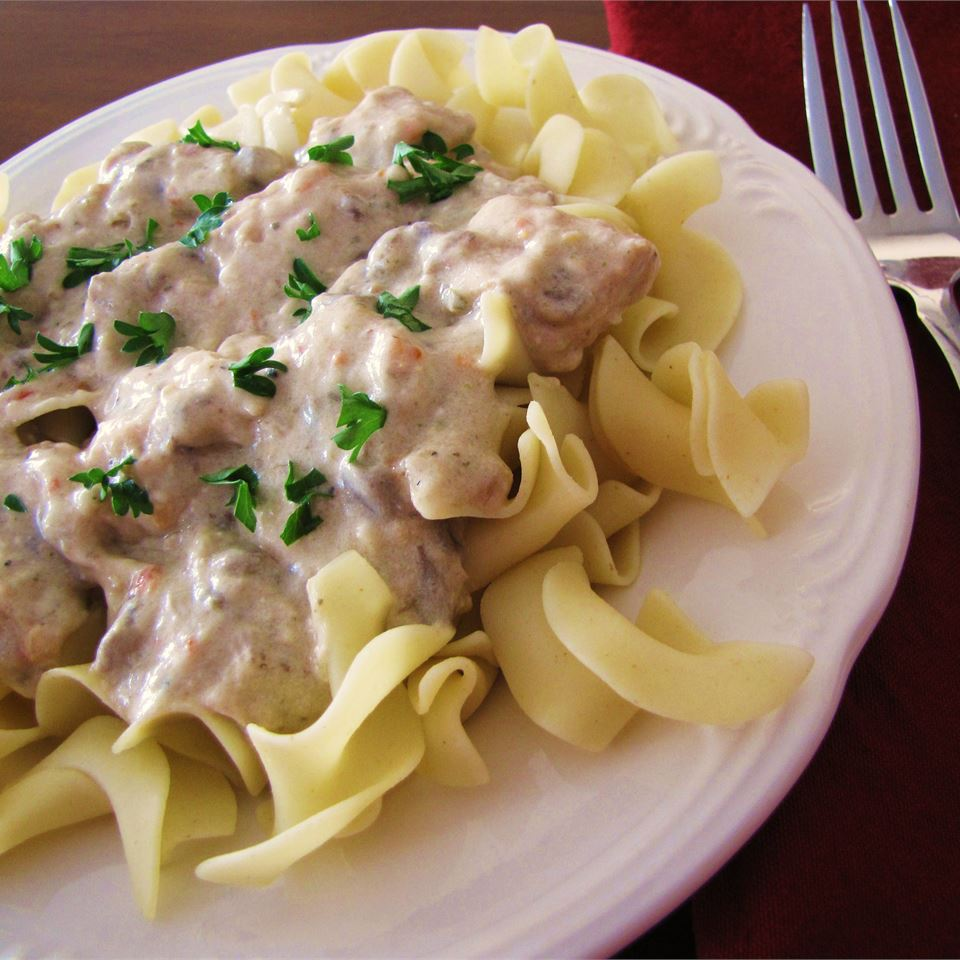

Slow Cooker Chicken Stroganoff

Description
Cubed chicken breast cooked in the slow cooker with a simple, creamy sauce mixture. This is so good, and so easy to make on a busy day. Serve over hot cooked rice, if desired.
Ingredients
- 4 skinless, boneless chicken breast halves-cubed
- 1/8 cup margarine
- 1 (.7 ounce) package dry Italian-style salad dressing mix
- 1 (8 ounce) package cream cheese
- 1 (10.75 ounce) can condensed cream of chicken soup
Steps
- Put chicken, margarine and dressing mix in slow cooker; mix together and cook on low for 5 to 6 hours.
- Add cream cheese and soup, mix together and cook on high for another 1/2 hour or until heated through and warm.